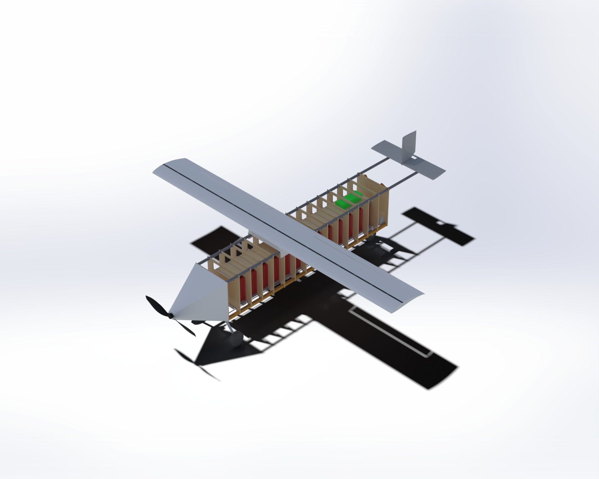
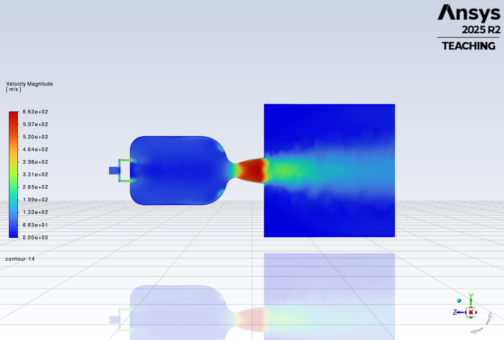
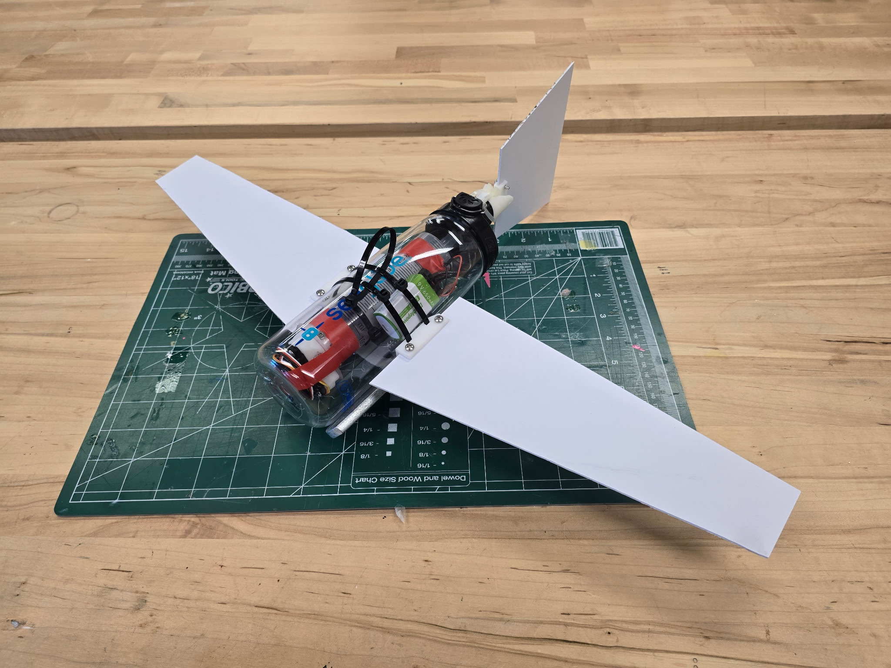

Projects

BWB Airliner Concept "Manta"
Ultra-efficient commercial aircraft concept targeting Mach 0.85.
View Report & Model →
RC Aircraft "Citadel"
Profit-maximizing MDO design and physical build.
View Report & Model →
Vortex-Cooled Rocket Engine CFD
CFD heat transfer analysis evaluating vortex cooling effectiveness.
View Analysis →
Wing Spar Analysis
MATLAB Structural Tool evaluating thin-walled beam theory.
View Full Report →
Wind Tunnel Testing
Clark Y-14 Airfoil Aerodynamics.
View Full Report →
SeaGlide AUV
Autonomous underwater glider with variable buoyancy.
View Media & Report →
LEO Orbit Det.
MATLAB-based orbit determination.
View Research →
Piston Engine
CAD Assemblies & Motion Validation.
View Model →
Lab Operations
Acoustics & Thermodynamics.
View Full Reports →Timeline
Sep 2022
UC San Diego — B.S. Aerospace
Commenced a Bachelor of Science in Aerospace Engineering, building a rigorous theoretical foundation. Completed extensive core coursework spanning Fluid Dynamics, Solid Mechanics, Thermodynamics, Aerospace Structures, Propulsion, Orbital Mechanics, Linear Control, and Engineering Experimental Techniques.
Sep 2023
ITS Service Desk Technician
Service Desk technician, worked extensively to resolve campus-wide technical issues and improved support workflows. Also collaborated with other ITS teams to help increase support efficiency and improve quality of service for customers.
May 2025
Promoted — Service Desk Lead
Helped lead a 60+ member technician team, overseeing daily campus-wide IT operations, complex troubleshooting, and cross-departmental coordination. Drove long-term organizational growth by facilitating staff training and managing documentation.
Jun 2025
RPL at UCSD
Supported the design, build, and launch of a G-class model rocket (~2,100 ft), contributing to assembly, CAD support, testing preparation, and team design discussions while gaining exposure to rocket stability and flight performance analysis.
Sep 2025
Design-Build-Fly (DBF)
Collaborated on the Aerodynamics and Structures subteams for a competition-scale RC aircraft. Drove performance-based design trade studies by assisting with airfoil selection, structural sizing, and CAD modeling.
Jan 2026
Senior Design Capstone — BWB
Served as Chief Engineer for an ultra-efficient Blended Wing Body commercial airliner concept. Led cross-functional efforts spanning gradient-free aerodynamic optimization, unconventional structural layout, and aft-propulsion integration.
Present
Chief Engineer — Project Citadel
Serving as Chief Engineer for a profit-maximizing RC aircraft project. Leading a multidisciplinary team through rigorous gradient-based design optimization (MDO), aerodynamic analysis, and the physical manufacturing of a high-payload configuration.
Oct 2026
TUM — M.S. Aerospace Engineering
Commencing Master's degree, focusing on advanced astronautical vehicles and space systems.
Skills
Experience

Contributed to UCSD’s Design-Build-Fly effort by supporting aerodynamic configuration decisions and practical build-to-test iteration on a student RC aircraft. Performed airfoil screening and low-fidelity analysis (XFOIL/XFLR5) to compare lift/drag trends under Reynolds-number constraints typical of competition-scale aircraft, and used results to inform geometry choices and stability targets. Helped translate analysis into CAD updates and manufacturing-ready geometry, then supported flight readiness through preflight checks and post-flight review.

Progressed from Service Desk Technician to Lead, taking responsibility for shift operations, escalation triage, and technician support during high-impact incidents. Mentored newer technicians, improved consistency in ticket handling through clearer triage routines and documentation, and served as a primary escalation point for complex account, device, and software issues. Coordinated with higher-tier teams when incidents required deeper network or systems support, focusing on fast communication, accurate handoffs, and restoring service with minimal user downtime.
Aspirations
My long-term goal is to help propel humanity into the next era of space exploration by contributing to the development of advanced astronautical vehicles and space systems. I aspire to work at the forefront of spacecraft design, system integration, and propulsion innovation, developing technologies that strengthen human capabilities on Earth while expanding our presence beyond it. I am particularly motivated by cutting-edge vehicle concepts and emerging technologies that push the boundaries of what is currently possible.